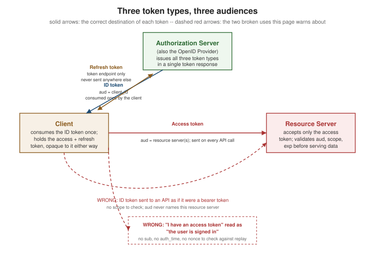

ID Tokens vs. Access Tokens
|
This content was generated with the assistance of AI and should be verified against the official documentation before being relied on in production. |
This is the single most common OAuth/OIDC mistake, and it is worth its own page: the ID token and the access token are two different credentials, minted for two different audiences, and using one where the other belongs breaks security guarantees that are easy to miss until they are exploited. This page draws the distinction, walks the ID-token claim set, and names the two concrete failure modes.
The distinction
-
An ID token is a statement made to the client by the authorization server (acting as an OpenID Provider) that a specific authentication event happened, for a specific user, at a specific time. It answers "who signed in, and when, and how confidently". It is always a JWT (OpenID Connect Core 1.0 §2), it is for the client that requested it, and it is not supposed to be sent anywhere else.
-
An access token is a credential for an API — a resource server. It answers "what is this bearer allowed to do", not "who is this". It may or may not be a JWT (see Access and Refresh Tokens), and its claims — when it has any — describe delegated capability (
scope,aud), not an authentication event.
| ID token | Access token | |
|---|---|---|
Answers |
"Who signed in, when, and how?" |
"What is this bearer allowed to call?" |
Audience ( |
The client (its |
One or more resource servers |
Consumed by |
The client itself, once, at token-response time |
The resource server, on every API call |
Format |
Always a JWT (OpenID Connect Core 1.0) |
Any format the AS chooses — JWT ( |
The ID-token claim set
OpenID Connect Core 1.0 §2 defines the standard claims carried in an ID token’s payload:
| Claim | Meaning |
|---|---|
|
Issuer identifier — the URL of the OpenID Provider that issued the token, matched exactly against the client’s configured issuer |
|
Subject identifier — a stable, locally unique identifier for the end user at this issuer; the client’s primary key for "who is this", never a mutable value like an e-mail address |
|
Audience — the |
|
Expiration time — an ID token is validated once, at token-response time, so this mostly guards against a stale token being replayed well after the authentication event |
|
Issued-at time — when the authentication event’s token was minted |
|
Echoes the |
|
When the actual end-user authentication occurred — distinct from |
|
Authentication Context Class Reference — a string identifying how strong the authentication was (frequently modelled on NIST SP 800-63B’s AAL1/2/3); used to enforce step-up requirements |
|
Authorized party — present when the |
amr (Authentication Methods References, RFC 8176) is also common on an ID token: an array naming which
authentication factors were actually used (e.g. ["pwd", "otp"]). It is the audit trail a relying party uses to
answer "was this login backed by a strong-enough factor", and it is exactly the signal
Authentication Methods: 2FA and Passwordless
builds its step-up guidance on.
|
Every OIDC claim above lives in the token payload as ordinary JSON; nothing about |
The token response, wire-level
An authorization-code flow with the openid scope returns both tokens in a single response — one JWT the
client consumes, one credential (JWT or opaque) the client forwards to an API:
HTTP/1.1 200 OK
Content-Type: application/json;charset=UTF-8
Cache-Control: no-store
{
"access_token": "eyJhbGciOiJSUzI1NiIsImtpZCI6ImFiYzEyMyJ9...",
"token_type": "Bearer",
"expires_in": 3600,
"refresh_token": "8xLOxBtZp8",
"scope": "openid profile orders:read",
"id_token": "eyJhbGciOiJSUzI1NiIsImtpZCI6ImFiYzEyMyJ9.eyJpc3MiOiJodHRwczovL2FzLmV4YW1wbGUuY29tIiwic3ViIjoiYWxpY2UiLCJhdWQiOiJzNkJoZFJrcXQzIiwiZXhwIjoxNzU4MDAwNjAwLCJpYXQiOjE3NTgwMDAwMDAsImF1dGhfdGltZSI6MTc1Nzk5OTk5MCwibm9uY2UiOiJuLTBTNl9XekEyTWoiLCJhY3IiOiJ1cm46bWFjZTppbmNvbW1vbjppYXA6c2lsdmVyIiwiYW1yIjpbInB3ZCIsIm90cCJdfQ.signature"
}Decoding the id_token payload shows exactly the claim set from the table below — iss, sub, aud (the
client’s own client_id, s6BhdRkqt3 here), exp, iat, auth_time, nonce, acr and amr — next to an
access_token that carries none of them and is opaque to the client regardless of its own internal format.
How a client validates an ID token
Unlike an access token, which the client never inspects, the client must validate the ID token itself before trusting anything it says. OpenID Connect Core 1.0 §3.1.3.7 defines the checks, in order:
| Step | What the client checks |
|---|---|
1. Decrypt if needed |
If the ID token is a nested JWE, decrypt it first with the client’s own key before anything else |
2. |
Matches the issuer the client discovered/configured for this OpenID Provider exactly |
3. |
Contains the client’s own |
4. |
If |
5. Signature |
Verifies against the OpenID Provider’s published JWKS, using the algorithm registered for this client (never an algorithm read blindly from the token — see JWT and the JOSE Family) |
6. |
Current time is before |
7. |
Present if the client sent one on the authorization request, and equal, byte-for-byte, to that value — this is what stops a captured or injected ID token from a different authorization request being replayed into this one |
8. |
If the client requested |
A client that skips the nonce check, in particular, reopens exactly the ID-token injection class of attack
the claim exists to close — an attacker who can get any validly-signed ID token in front of the client (for
example, by racing a redirect) can otherwise impersonate the flow’s outcome.
|
On the authorization code flow (the flow this section documents throughout), there is no separate |
The two failure modes
Sending an ID token to an API
An ID token’s aud names the client, not any resource server. A resource server that accepts an ID token as
if it were a bearer access token is trusting a credential that was never scoped, never audience-restricted to
it, and was never meant to authorize an API call at all — it merely proves a login happened, once, to one
specific client. Concretely:
-
The ID token carries no
scope— there is nothing for the resource server to check permissions against, so implementations that go down this path typically end up granting blanket access to anyone who can produce any valid ID token from the trusted issuer, regardless of what that user should be allowed to do. -
If more than one client shares the same OpenID Provider, an ID token issued to client A (
aud= A) can often still be decoded and its signature verified by a resource server that never checksaud— exactly the confused-deputy scenario RFC 9700 §4.9 describes for tokens in general. The resource server ends up accepting a credential that was never intended for it.
The correct credential for an API call is always the access token obtained alongside the ID token in the same token response.
Treating an access token as proof of login
The opposite mistake: a client receives an access token (perhaps opaque, perhaps a JWT) and treats "I have an access token" as "the user is authenticated, and I know who they are". This breaks down concretely:
-
An opaque access token carries no claims the client can even read — there is no
sub, noauth_time, nononceto check against replay. The client has proof of authorization, not proof of an authentication event. -
Even when the access token happens to be a JWT, it was never bound to the client’s own authorization request the way
noncebinds an ID token — an access token minted for a different purpose or replayed from elsewhere can be indistinguishable from a legitimately obtained one if the client has nononceto check. -
client_credentials-flow access tokens are not tied to any end user at all (RFC 6749 §4.4) — a client that infers "some user is logged in" from possessing an access token gets this catastrophically wrong for a service-to-service token.
The correct credential for "who is signed in" is always the ID token, validated with its nonce checked against
the value the client itself generated for that authorization request.
Comparison table: ID token, access token, refresh token
| ID token | Access token | Refresh token | |
|---|---|---|---|
Purpose |
Statement of an authentication event, to the client |
Credential authorizing an API call |
Credential to obtain new access (and refresh) tokens |
Audience |
The client ( |
One or more resource servers |
The authorization server’s token endpoint only |
Format |
Always a JWT (OIDC Core 1.0) |
JWT ( |
Almost always opaque; never parsed by the client or a resource server |
Typical lifetime |
Consumed once, at token-response time; short |
Short (minutes to about an hour) |
Long (days to weeks), governed by absolute/idle expiry — see Access and Refresh Tokens |
Who validates it |
The client, once, checking |
The resource server, on every request (locally if a JWT, or via introspection if opaque) |
The authorization server’s token endpoint, on every refresh request |
What happens when it leaks |
Discloses that an authentication event happened for a given |
Bearer tokens are usable by anyone who holds them, for the token’s
scope, until |
The most damaging leak of the three: usable to mint new access tokens repeatedly until the family is revoked — rotation and reuse detection exist specifically to bound this |
